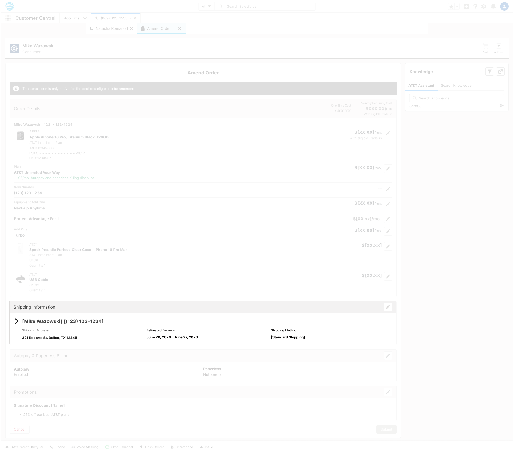
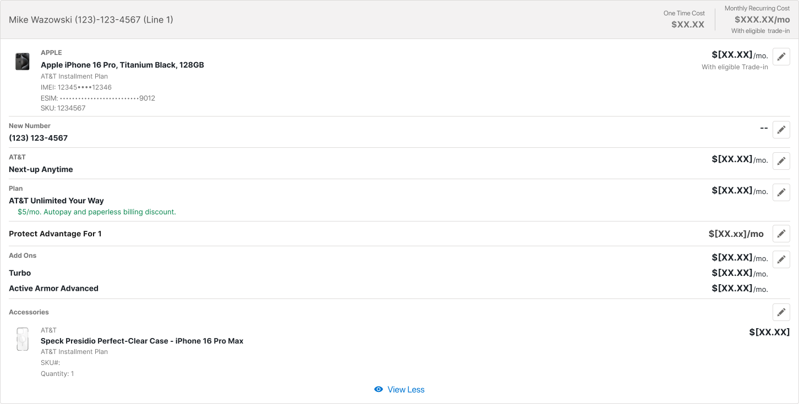
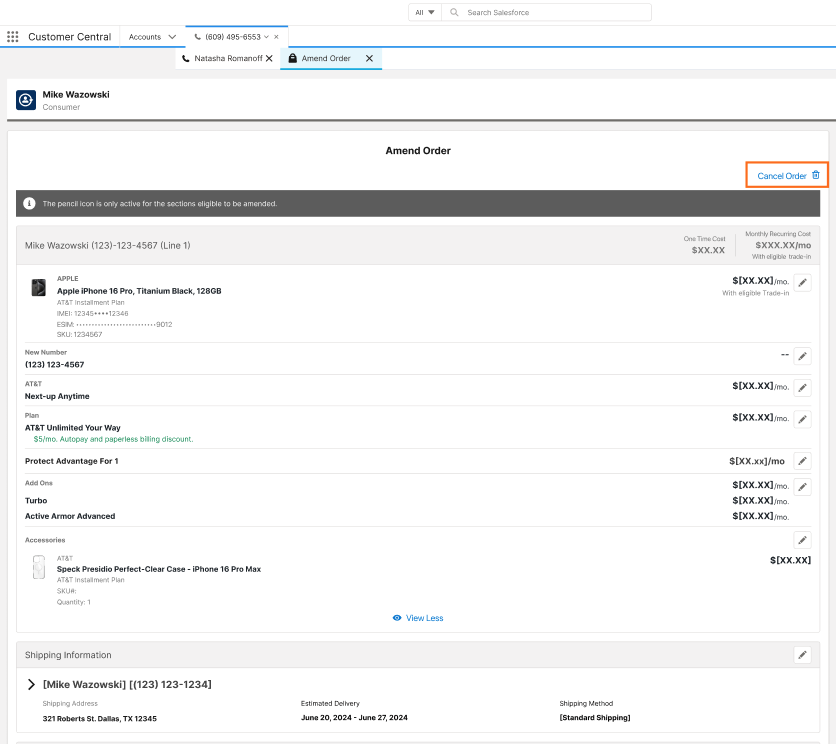
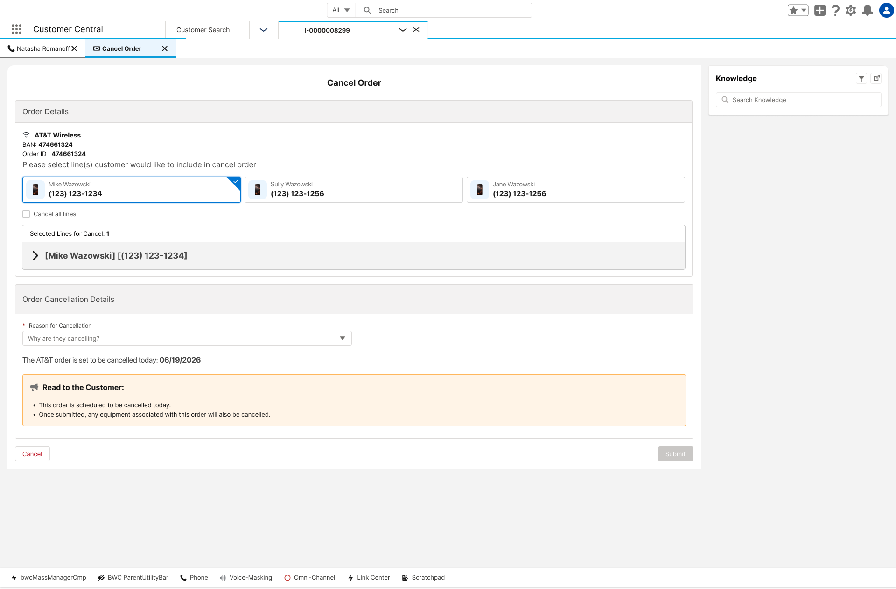
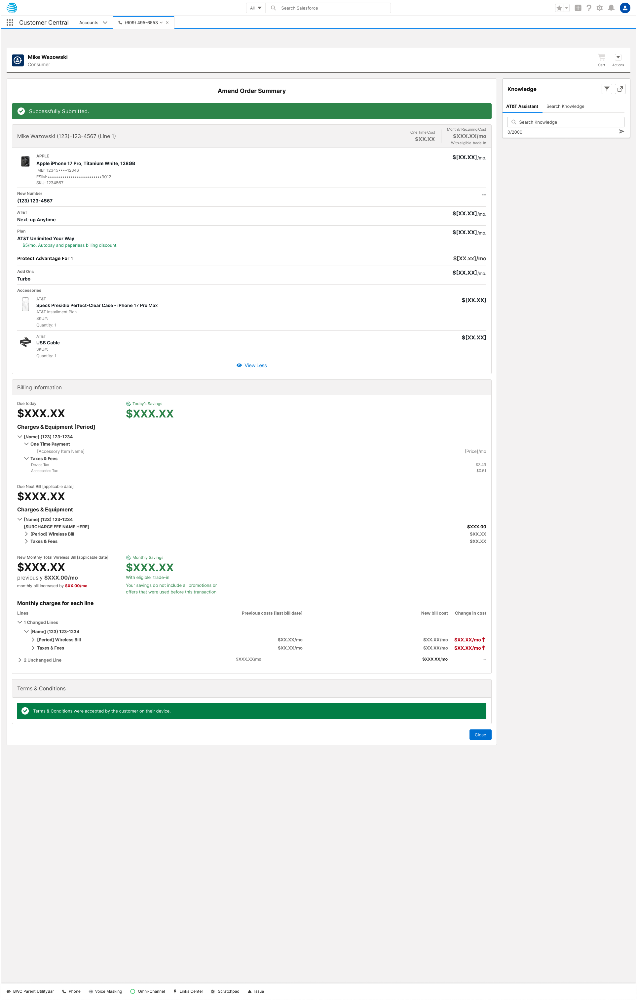

Amend
A customer changes their mind about a delivery address, or wants to add AutoPay after the fact — and the only tool an agent had was to cancel the whole pending order and start over. I designed the in-place editing experience that let agents amend a live order and negotiated its scope against backend limitations.
The Problem
Any change to a pending wireless order — a new phone number, a different delivery address, an added feature — meant canceling the entire order and rebuilding it from scratch.
Recreating an order costs the agent time, costs the customer patience, and introduces fallout risk every time an order gets rebuilt instead of adjusted. The fix sounds simple — "let agents edit the order" — but a pending order isn't a static form. It's a live object moving through fulfillment, and different fields become un-editable at different points depending on what's already happened downstream in supply chain and billing systems.
Designing Around a Moving Deadline
The core design constraint was the Point of No Return (PONR) — the moment in an order's lifecycle after which a given field can no longer be changed without becoming a different kind of transaction entirely.
I designed the interface so this constraint was visible and enforced, not just documented in a spec: eligible fields shown in an active state and ineligable changes in a disabled state. Eligibility is checked in real time against the order's actual status.

Deciding What to Focus On
The ask was to let agents amend a live order. What arrived was eleven amendment types from different corners of the shopping experience — each treated by stakeholders as its own request.
Eleven standalone flows would have meant eleven inconsistent patterns and a customer routed through multiple submissions any time more than one thing changed in a call — the exact failure this project existed to fix. My PM and I reframed it as one architecture problem instead: a single stateful draft that any eligible change gets added to, validated once, and submitted once.
- One page with 10 amend types. Amending address, phone number, device details, plans, billing, and all other requirements can now be done from one page.
- Single-line as MVP 1 Scope was always multiline but I pushed to sequence single-line first so we could build on existing sales-flow patterns and align with the sales team ahead of multiline
- Built multiline - an MVP 2 experience - in parallel so that the design could scale as multiline depended on initiatives that weren't ready yet. Considering both experiences to cut engineering rework later.
- One cancel CTA instead of two. Partial cancel and full cancel were combined into once CTA by building a single line experience that could easily scale to multiline with little engineering rework.

When the Backend Says No
During one working session with our PM, I was walking through a mockup that let an agent cancel a single line directly from the amend flow:

Right here — this is what I had mocked up before. You're in the amend order page, and you can cancel the order or cancel the line from here if you want.
That's not possible — in the [backend system], they won't give us a cancel indicator. The backend team is saying that's not feasible.
Wait — why is this not possible?
Technical limitation.
The cancel experience was particularly complex because of the lack of scope clarity. My PM and I didn't know if we would be initating partial cancel and full cancel as seperate CTAs on top of the amend experience or both from one CTA — more on how this got resolved below. I explored the option of no cancel CTA at all until already in the amend flow but that was closed by the dev team, leaving me with a few other brainstormed ideas to try out.
Getting the Org to Move
Cancel's scope was unclear from the start — the original ask was two separate CTAs, a full cancel and a partial cancel, as two distinct requests. Building the MVP2 card structure reframed the problem: once every line already renders as its own selectable card, full and partial cancel aren't different actions, just different scope. I rebuilt cancel around that structure — the agent selects the line(s), and selecting all of them is a full cancel by construction — collapsing two CTAs into one.

The Review Before Submit
Every change an agent adds to a draft — a device swap, a removed promotion, a corrected address — lands in one consolidated review before the single submission fires.
This review screen is where that model becomes something an agent can actually verify against. It surfaces:
- Original and resulting selections, side by side
- Updated monthly and one-time charges
- Promotions added or removed
- Delivery and porting impact
- Financing or agreement requirements
- Canceled items
- Returns or customer follow-up required
It's the one place in the flow where every downstream consequence of a multi-part amend is visible at once, before it's irreversible.

Errors and a Change of Heart
Because this flow touches billing, inventory holds, and shipping — real operational consequences, not just UI state — I designed explicit failure and reversal paths as first-class parts of the flow:
- An agent can cancel an in-progress amend at any point, which triggers the system to release the hold it placed on the order rather than leaving it stuck.
- If a CTN amendment fails on the backend, the interface reverts cleanly to the original number and surfaces a clear, agent-facing explanation instead of a raw error.
- Every amend action writes to an order history — who changed what, the old value, the new value, and when — so a later agent (or a customer dispute) has a real audit trail instead of a guess.
- Rollout is staged behind feature flags by user, store, profile, and channel, so the capability can be dialed back instantly if something goes wrong in production without a full redeploy.
Agent-facing copy — failure explanations, disabled-state messages, review-screen labels — went through two business reviews a week before shipping. I used AI to draft first-pass copy variants; the language above reflects that review cycle, not a single draft.
Impact
- Agents can now resolve common post-submission changes — a new number, a corrected address, an added feature — without canceling and recreating the order, removing a source of fallout risk tied to order recreation.
- The amend interface reused existing New Number, Port-In, and payment-method components rather than introducing new patterns, which kept the design consistent with the rest of the platform and reduced the training burden on agents.
- Staged, flagged rollout meant the feature could reach real agents incrementally instead of as a single high-risk cutover.
This feature shipped in phases; the scope described above reflects what was designed and, per the team's working sessions, agreed as buildable — some edge cases (like the single-line cancel discussed above) were intentionally deferred rather than shipped in the initial release.
Reflection
Finding out "cancel a line" wasn't backend-feasible in that working session was worth more than finding out three sprints later as a blocked ticket. That's the case for staying in the room with engineering while a design is still soft, rather than presenting a finished mock and hearing about the wall afterward.
The harder skill sits next to that one, not against it: telling a real constraint apart from an inherited assumption. I accepted the line-level cancel limitation the moment engineering confirmed it was a backend wall. I didn't accept the backend-first cancellation model, because that one was never a wall — it was just the shape the conversation had taken before I got in the room. Knowing which of those two responses a given moment calls for is most of the job.